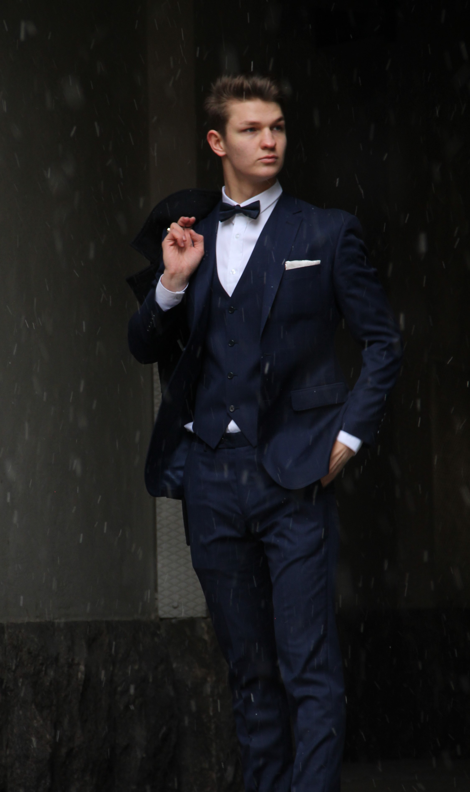

I am a first year Information Networks student at Aalto-university. Information Networks focuses on the interaction between users and digital technologies. Our studies consist of programming, industrial engineering and other supporting studies, such as communication skills and psychology.
This combination builds a strong foundation in programming, design and business knowledge. I think the most important skill I have is seeing the bigger picture in the modern business world.
I have developed my skills especially in sales and customer service. As a result, I know the needs of the customer and I am able to provide solutions for them. On the technical side, I am familiar with Scala, HTML, CSS, Javascript and React. This skillset is perfect for front-end work.
As a person I am social, ambitious and always eager to learn new things. On my own time, I like photographing, going to the gym and learning new things about investing.
I am especially interested in jobs related to data management and UX designing. My background as a photographer gives me a vision to see what kind of design works and what doesn't. With the help of my studies, I am able to implement design to digital technologies. My interest in data and mathematics gives me a foundation to analyze and process data and draw conclusions.
I am open to discuss about job offerings and projects related to design or digital technologies.
juhana.viitamo@aalto.fi
+358453196495
